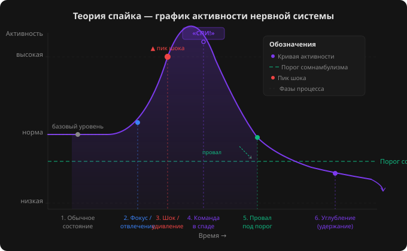

3.1 — Four Principles of Instant Induction
Module 3 • ~15 minutes
⚡ Four Principles — One Mechanism
Instant inductions work because they all use the same universal mechanism: creating a spike — a sharp peak in the nervous system — and using the subsequent drop to "fall" into a trance.
Unlike the classic Elman induction, which takes 10–15 minutes, instant inductions bring about somnambulism in 1–3 seconds. The difference is not in the quality of the trance — it's in the speed of entry. But to do this safely and effectively, you need to understand the four principles that form the foundation of Jerry Kain's Kayfabe method.
All four principles are not separate techniques, but stages of a single process. Skip any one, and you'll either fail to enter trance, or the person will come out of it as fast as they went in.
🧠 Key Idea: Instant induction is not magic or a "special talent." It's a sequence of four steps, each of which can be mastered separately. When you combine them into one smooth sequence, you get an induction in seconds.
🎯 First Principle — Focus or Distraction of Attention
Hypnosis is, by definition, a state of highly focused attention. But the paradox is that to enter this state, attention must either be concentrated on one thing (as in classic induction) or distracted enough that the critical factor "releases" control.
Focus as a Window
When you anchor a person's attention to something — your voice, a sensation in their hand, a movement — their conscious mind stops scanning the environment. The critical factor (that part of the mind that analyzes and rejects suggestions) temporarily lowers its guard. This creates a window of opportunity for suggestion.
Distraction as a Bypass
In instant inductions, distraction is used more often than focus. Why? Because focusing takes time (the person needs to "tune in"), while distraction can be created instantly — with a sharp movement, an unexpected question, or cognitive overload.
🧠 Real-life example: When you suddenly call out a person's name in a crowd, for a second their attention switches to you — and at that moment they are particularly suggestible. Instant inductions use the same principle, but in a targeted and controlled way.
⚡ Second Principle — Shock or Surprise
Shock creates a small peak in the nervous system — a sharp burst of activity, followed by a natural decline. This decline is the "window" through which you deliver the command.
Ways to Create Shock
Shock can be created in two main ways:
- A sharp movement of a body part: pulling out a hand, moving the head, a sudden change in posture. This is mechanical shock — the nervous system reacts to an unexpected change in body position.
- With the voice: a sharp command, an unexpected change of tone, a loud sound. In a therapeutic context, use only the voice — there's no need to physically jostle or shake people.
Why Shock Works
The nervous system is wired so that after any sharp peak of activity, it "rebounds" below the baseline level — this is a physiological self-regulation mechanism. If you manage to give a command at this moment of decline, the subconscious accepts it without criticism, because the critical factor is temporarily "stunned" by the peak.
🧠 Important: Shock should not be traumatic. In a therapeutic context, a mild surprise is enough — an unexpected vocal command, a change in speech rhythm. You're not scaring the person; you're creating a small "oh!" in their nervous system.
💤 Third Principle — The "Sleep" Command
The "sleep" command is the trigger that launches the transition into a hypnotic state. It must be:
- Short — one word, two at most. The shorter the command, the faster the subconscious processes it.
- Clear — the meaning must be absolutely obvious. No metaphors, images, or complex constructions.
- Pre-explained — the client must know in advance what the "sleep" command means in the context of hypnosis.
Pre-explanation — The Key to Success
Before an instant induction, be sure to explain to the client: "When I say 'sleep,' it doesn't mean you'll fall asleep like at night. It means — allow your nervous system to fully relax. You will continue to hear my voice, but your body will become completely relaxed."
This removes fear, eliminates resistance, and gives the subconscious a clear instruction. If you give the command without prior explanation, the client may get scared or not understand what is expected of them.
The ~0.25 Second Window
The most critical factor is timing. The "sleep" command must sound approximately 0.25 seconds after the shock. If you're late, the nervous system returns to baseline and the window closes. If you give the command too early, it gets "lost" in the shock peak.
"I'll touch your hand… and when I say 'sleep' — you'll relax completely. Not asleep, but relaxed to the deepest level. Ready? [pause] Look at my hand… [sharp movement — pulling the hand away] — SLEEP!"
🧠 Technique: To hit the window, don't consciously think about 0.25 seconds. Train the 'shock → command' sequence until it's automatic. During rehearsals, do this with a partner until you feel the rhythm — it's like a hand clap: two actions that merge into one.
🔊 Fourth Principle — Instant Deepening
The most frequently skipped principle — and the most important for maintaining the trance. After you give the "sleep" command, you must immediately start speaking — giving suggestions for relaxation, deepening, and stabilization.
Why This Is Critically Important
The person entered trance through shock — their nervous system spiked and fell below the somnambulism threshold. But if you go silent at this moment, the nervous system will just as quickly recover and "push" the person back. The entry was instant — and the exit will be instant too.
Your task is to fill the silence with suggestions that deepen and stabilize the trance. Use the same stabilization phrases you mastered in Module 2, but in a condensed form.
What to Say Immediately After "Sleep"
"…SLEEP! Deep. Completely relax. Every muscle, every cell. You hear my voice — it's leading you deeper. Very deep. Everything around you disappears. Only my voice and this deep relaxation remain. With every word — deeper. Relaxation flows through your entire body…"
This stream of suggestions is not "just chatter." Every word should work toward deepening. Use:
- Direct suggestions: "relax," "deeper," "let go"
- Isolation: "everything around disappears," "only my voice"
- Positive loop: "the deeper you go, the better you feel"
- Tactile anchors: a light press on the shoulder, if appropriate
🧠 Rule: If you go silent after "sleep" — you've lost the trance. The first 5–10 seconds after the command are the most critical. Speak continuously until you feel the person has "settled" at depth. After that, you can transition to the stabilization phrases from Module 2.
📈 Spike Theory — Illustration
To understand how the four principles work together, picture a graph. The horizontal axis is time. The vertical axis is nervous system activity level.

🖱 Click to enlarge
The key insight: a peak is not required for entering trance — the classic Elman induction doesn't use shock. But the peak allows you to enter trance instantly, because it creates an artificial "drop" in activity that the subconscious uses as a springboard.
🧠 Important: Without the fourth principle (instant deepening), the graph looks like this: peak → decline → return to baseline. The person takes a "dive" but doesn't stay underwater. The fourth principle is the "anchor" that holds them below the threshold.
🔧 Examples of Applying the Four Principles
The same sequence of principles can look different. Here are three examples:
Example 1 — Through the Hand (Kayfabe-style):
1️⃣ (Focus) "Look at my hand. Focus on the feeling of my touch…"
2️⃣ (Shock) [Sharply pulls hand out from under the client's hand]
3️⃣ (Command) "…SLEEP!"
4️⃣ (Deepening) "Deep. Completely relax. With every word, deeper…"
Example 2 — Verbal Shock:
1️⃣ (Focus) "Close your eyes and listen only to my voice…"
2️⃣ (Shock) [Sharply changes tone — loud and clear] "NOW!"
3️⃣ (Command) "…SLEEP!"
4️⃣ (Deepening) "…deep, deep. Relaxation spreads through your entire body…"
Example 3 — With Balance (Standing):
1️⃣ (Focus) "Stand up straight, close your eyes. Feel me touching your forehead…"
2️⃣ (Shock) [Removes hand — the person loses their point of support and sways slightly]
3️⃣ (Command) "…SLEEP!"
4️⃣ (Deepening) "I've got you. You're safe. Relax completely…"
🧠 Note: In all three examples, the sequence is the same — focus, shock, command, deepening. Only the tool for each principle changes. Once you master this sequence, you'll be able to create your own instant inductions.
📝 Practice Assignment
Goal: Create your own instant induction using the four principles.
- Choose one way to focus attention (through gaze, touch, voice, breathing).
- Choose one way to create shock (sharp movement, change of vocal tone, unexpected command).
- Formulate your "sleep" command — short, clear, with an intonation that leaves no doubt.
- Prepare 3–5 phrases for instant deepening — what you'll say immediately after "sleep."
- Write down the full sequence. Rehearse in front of a mirror.
Example structure for writing it down:
Focus: [what I do/say to capture attention]
Shock: [how I create the peak]
Command: [what I say and with what intonation]
Deepening: [first 5–10 seconds after the command]
🧠 Tip: Start with the simplest option — the hand induction (example 1). It's the most reliable and forgives mistakes. Once you've mastered it on a partner, experiment with other tools.